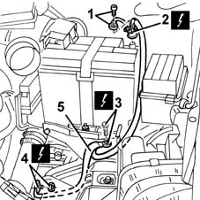

5530B22 battery earth lead - r+r
- Path
- Procedures > 55 ELECTRICAL EQUIPMENT > 5530 CURRENT GENERATOR > 5530B battery and leads > 5530B22 battery earth lead - r+r
- Kind
- repair procedure (removal / refitting; the operation number is the code)
- Applies to
- all engines; all production periods
- Interactive page
- https://sloeber94.github.io/elrnDB-fMltpl/en/#/2891912
Applies to: all engines; all production periods
 Removing
Removing
 Refitting
Refitting1048A10 AIR CLEANER FILTERING ELEMENT - REPLACE
1. Disconnect the electrical connections from the negative battery terminal.
2. Disconnect the terminal from the negative battery pole.
 | Name | Connector |
|---|---|---|
2 | Battery |
3. Disconnect the electrical earth connection at the bodyshell.
| Name | Connector |
|---|---|---|
3 | Left front earth |
4. Disconnect the electrical earth connection at the power unit gearbox.
| Name | Connector |
|---|---|---|
4 | Battery earth |
5. Recover the earth lead.

Applies to: all engines; all production periods
Refitting
RemovingCheck that the earth lead is not damaged.
If necessary, check the electrical continuity.
Reposition the earth lead.
Connect the electrical earth connection at the gearbox.
Connect the electrical earth connection at the bodyshell.
Connect the terminal to the negative battery pole.
Connect the electrical connections to the battery terminal.
Topics linked from this page (4)
- 1048A10 AIR CLEANER FILTERING ELEMENT - REPLACE
- A001B Battery ( BATTERY NEGATIVE )
- C001 Battery earth ( BATTERY NEGATIVE )
- C010C Left front earth ( BATTERY NEGATIVE )